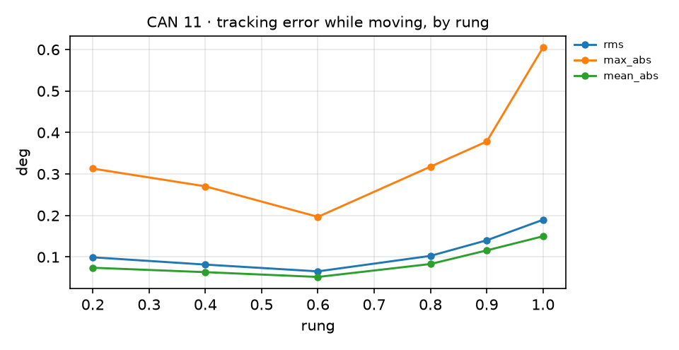

Tracking
ErrorStat
runs live view: kpi_trendOne statistic of target - measured over the rows it reads: rms, max_abs or mean_abs.

plot() (CAN 11's real round-8 runs)In
Reads the error
AlignedPair · target, measured: two robot_msgs streams on the same instants (JointTrajectory, or PoseTrajectory for a tool). align() puts a plan on the replies' instants first.Reads the error
compare(target, measured).error of one field and joint, or a pose's position error.Out number · a number in the signal's SI unit (rad, m for a tool, rad/s, N·m).
State: (Σe², n, max|e|, Σ|e|): four numbers, shared by rms, max_abs and mean_abs.
State: (Σe², n, max|e|, Σ|e|): four numbers, shared by rms, max_abs and mean_abs.
Function functional.error_stat(target, measured, **config)
In the catalog servo: tracking RMS servo: tracking peak arm: tip tracking RMS chain: tool tracking RMS chain: tool worst
Config: 4 fields
| field | default | values |
|---|---|---|
statistic | 'rms' | rms · max_abs · mean_abs — rms | max_abs | mean_abs |
rows | 'all' | all · moving — all | moving (commanded speed not zero) |
field | 'positions' | positions · velocities · effort — positions | velocities | effort (a pose: its position error) |
joint | 0 |
The code that drew the picture (0.12 s)
statistics = ("rms", "max_abs", "mean_abs") aliases = [] for statistic in statistics: metric = ErrorStat(statistic=statistic, rows="moving") aliases.append(Alias(statistic, metric, unit="deg", scale=DEGREES)) tracking = Collection(aliases) tracking
Collection(3 aliases over 1 states)
by_rung = summarize(tracking, can11_runs, by=("rung",)) rungs, values, series = [], [], [] for (rung,), stratum in sorted(by_rung.items()): for statistic in statistics: rungs.append(rung) values.append(stratum.values[statistic]) series.append(statistic) view = View( title="CAN 11 · tracking error while moving, by rung", unit="deg", hint=ErrorStat.hint, x=rungs, y=values, group=series, x_label="rung", ) figure, axes = plt.subplots(figsize=(6.4, 3.3), dpi=150) figure, axes = plot(view, ax=axes, path=MEDIA / "catalog-errorstat.png")
References
- robot_msgs.compare.ErrorStats
- robotdx.diagnostics.stock (io-diagnostics main a7fc658) tracking_error
- evo APE (Grupp 2017)